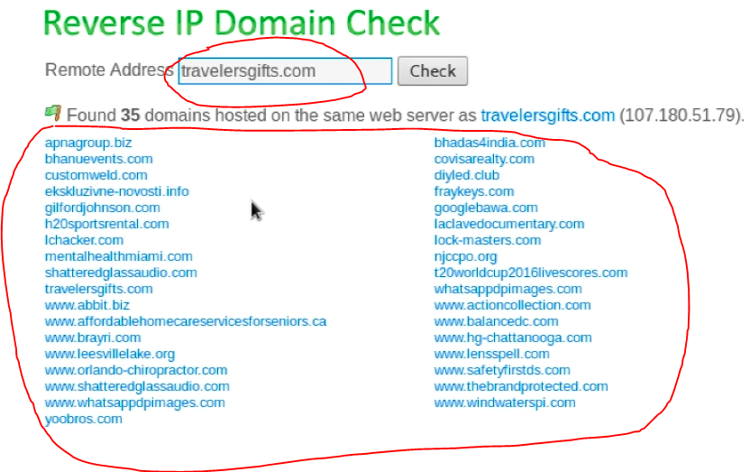
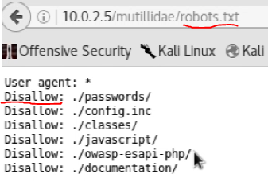

Web Siteleri hakkında bilgi toplamaya yarayan araçlar & servisler:
Netcraft (online olarak bilgi toplanabilir)
YouGetSignal:
Bazı sunucularda birden fazla websitesi saklanabiliyor, olabiliyor. İşte bu tarz durumlar için YouGetSignal aynı ip adresini kullanan ilişkili bütün websitelerini gösteriyor. yani websitesinden ip ye değil de, ip den websitelerini bulabilmemize (reverse ip) olanak sağlıyor. Bu yönteme reverse ip deniyor. Bu sayede aynı ip de bulunan ama güvenliği daha düşük bir websitesini ele geçirip sisteme sızabilirsek, daha güvenli olan diğer websiteleri ile aynı sunucu da aynı ip de olacağımız için diğer websitelerine de erişebileceğiz.
İşte YouGetSignal üzerinden bir reverse ip domain check sonucu;

Archive.org
robots.txt
robots.txt aslında web site adminlerinin “./password/, ./config/” vb gibi public olarak görünmesini istenmeyen dosyalarını, google tarafından indexlenmemesini istedikleri dosyaları tuttuğu yerdir. Normalde web sitesinin google tarafından indexlenip arama sonucunda çıkması istenir fakat tabi ki “./password/, ./config/” vb gibi dosyaların indexlenmesi güvenlik açığı oluşturacağından bunu site yöneticileri istemezler o nedenle robots.txt içine saklarlar ve google bunu indexlemesin diye “Dissallow” ederler. Örnek olarak;
 gibi.
whois lookup